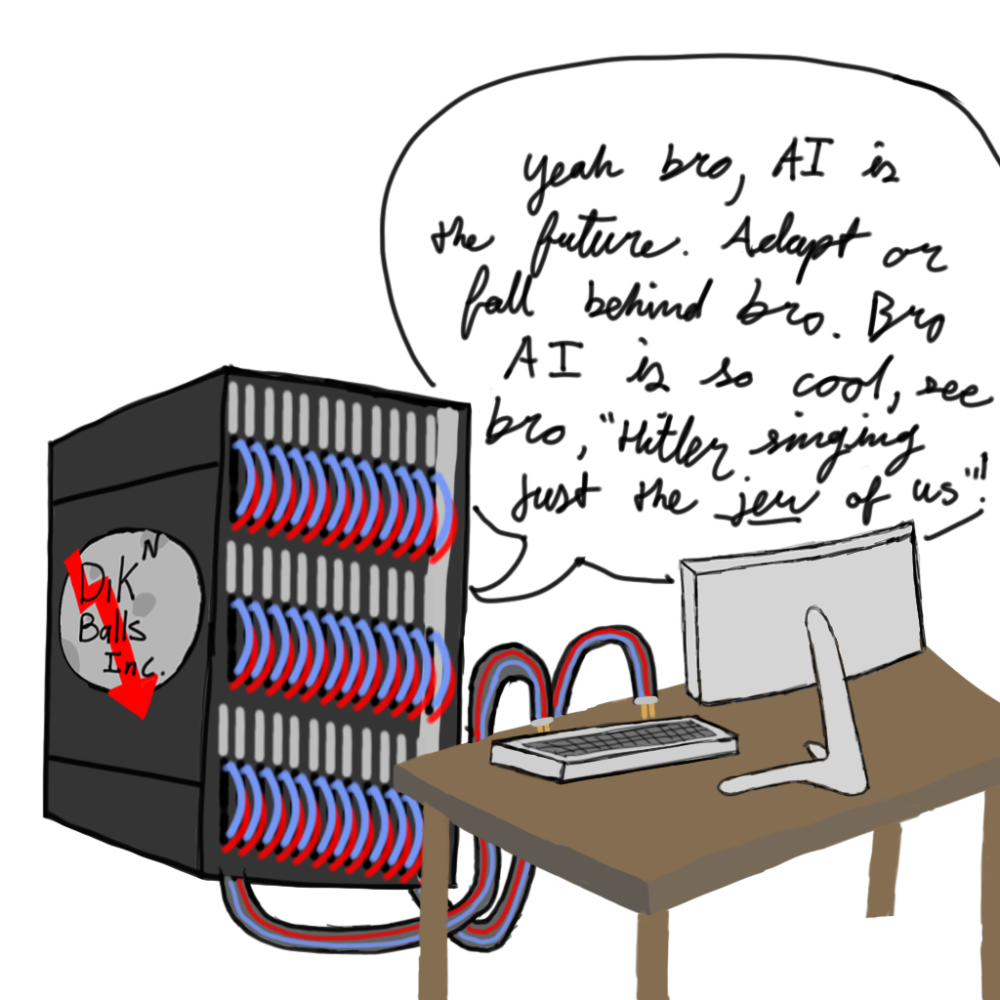

Im, sorry, ever since my last rant -- which took 2 hours to release my pent up rage -- I have been stuck on this topic. I cannot fathom how stupid pro AI people sound. But when you look into it, both side are about as dumb as each other, but they are so caught up in war against each other they don't see it. Even though both sides are running low on brain density meter, I find myself generally siding with anti AI people.
Let me start by saying I love humans, they are creative, endearing creature: born to inherit the stars. I dont like death threats, though if you have seen my other rants you may not think it. And recently, I tried to come to an understanding with pro AI people. I was almost ready for bed, just doom scrolling or whatever, then I found this -- probably a robot in disguise -- post this: "ALL Images and Art Should Be Allowed To Be Used To Train AI" 
And here I am, at 3am, thinking intelligence came pre-packaged with genetics, but I guess, once more, I am mistaken. I cant take it anymore, it doesn't stop, it never stops. I see a reddit post which is arguably the first mistake. I look in the comments: did a terrorist attack occur or has it always been this bad? I physically shake my head, and support my temple with my hands as I rub my eyes. If it weren't for physics, I'd be repulsed into the wall at fatal speeds. This sounds like hyperbole, and it is, besides the fact that I actually experience a mental and emotional response from the god awful things I read from AI subreddits. Lets just take a deep breath and sigh.
(Your welcome for the breather by the way) Unfortunately we must resume the onslaught of "The Lobe Shredder". The take "ALL Images and Art Should Be Allowed To Be Used To Train AI", assumes a default of public images which is problematic: some images aren't meant to be shared. Secondly, assuming that ALL images should be allowed, this immidiately takes away the concept of ownership, and guess who else doesn't support ownership: Adobe, (Some) Game Companies and distributers, Big-Education (the creator of Etextbooks is inhuman and has earned the throne in hell), Streaming services, etc. You quite literally don't own what you bought anymore, and in a case like this, you wouldn't own you create either: you'd still be the creator, but that doesn't matter since it'll be thrown to the machine.
Another concept ruined by this take is privacy (which I mentioned earlier, but I will expand on it). If the machine should be allowed to consume whatever is created in the name of "the future" (which at this rate will be mostly monopolized by big tech, if we continue down the current path), then that takes away your right to control how your work is used. In the code world we use licenses, these vary from allowing the code to be used however you want, to not be used without a paid license, and for the service to not be redistributed.
Im no lawyer, but let me say this: even though the skull of an AI hyper devotee is dense enough to deflect rational thought: Copyright would be violated, because a human artist has the right to copyright their work. The artist or original creator cant ask to retract their data, cause its already been consumed (which to be fair with large data sets, one piece of work will not matter that much), regardless, users shouldn't have to follow a authoritarian monopolized company in training their AI. WE EVEN SEE THIS TODAY: Adobe and Deviant Art both scrape your creations for their AI, but no worries for you, its likely to late. Why is it such a big deal that artist have creative control over how their works are used anyways? If they dont want something used for an AI (whether stolen or not depending on your side of the AI war) they should have the right to not have it be used and not fear the SS breaking into their homes saying:
- "Your time and effort, hand it over."
- "What time and effort? Nothing to be seen here!"
- "Is that so? Then whats the shuffling sound in your attic?"
- (Im going to stop here becuase we shouldn't repeat mistakes of the past but you get the point)
Once the pleasure machine is built, do we subject ourselves to a life of pleasure, or a life of resilience?
I've grown
A long while ago I was reading a reddit post regarding AI (which I no longer remember), after reading a few of the replies, I came to be in agreeance with a comment along the lines of "I use AI for utilitarian reasons only", and I think that is a fair compremise. Humans know humans best and we should appeal to eachother. If I need something quick and dirty, there is no reason I should be barred from using Ai, data/web scraping, making quick vizualizations of data (and more I can't think of right now).
There is nothing stopping you from using AI for art, and I don't necessarily want it to go away either. But I don't want AI pushed on me. Haters will say "you just dont want to accept the future", yeah, I don't, your future is pretty stupid Micheal and you should feel ashamed for having freewill. Even if platforms accept AI content, the most I ask for is a filter so I can enjoy said platforms how they orginially were: No chatbots and plastic-y looking fake images.
"You should just accept AI" -- I shouldn't have to accept anything, I can be stubborn in a nation with the most freedom on earth. Plus, the demand for human artists is clear, Fireship made a fantastic video about a human art platform Cara who's server demands sky rocketed, thats a clear sign of demand for human only art.
Please, tell me bros, do you understand nuance or are your takes just deafeningly awful.
Your veil of the internet is protecting you, that combined with your echo chamber leads you to a radicalized ideology. Go to any reddit post scroll to the comments and check the upvote count, people grounded in reality will soon realize that relatively tame takes are in the negative. Think about that.
The prospect of ownership is not evil!
We as humans should have the right to own stuff. I like my house but some hobo shouldn't be able to take it because "Think about what this house could do for me in the future", brother, you're a crack addict, what future?
Can we not downplay skill?
If I am wrong about any information, firstly, thank you for your pursuit of the truth, secondly, depending if your an AI bro, you can suck my fat nuts. Lastly, just contact me somewhere (Editor me will probably add tags/ids/contact information later)
"If Ai isnt art, then neither is photography", How about I Judo throw you in an industrial dye vat?
If you really want to argue this path go ahead, but also consider this: if you asked me what art you should make, the obvious answer is going to be a drawing or painting, not a photo. This is because photography is photograhy, it can be art in the sense of "artistic", but at the end of the day it's just photography. AI "art" is just pushing a message to normalize not having skill can be solved by doing no work to improve your skill.
Don't get me wrong, something I can find acceptible: a character artist making a few background props -- sure, Some additional flowers in a flower field -- go ahead. The issue is that in AI "art" the focal point is created by AI. I get not wanting to do anything because you're lazy and rotting away behind your "battlestation", but can you not insult the people who have spent the time to learn the beautiful craft of art?
Lastly for the neanderthals among us, consider this: making an AI written story. What can I even say? Like, do you enjoy writing? Do you want to tell a story? Story telling is subjective so not everyone will like what you write (like me, I am making myself God's most targeted writer because it's funny to insult you guys), but you take out the passion, you take out the comprehensiveness, you take out original ideas (remember, AI is word vomit from previously consumed media), and what do you have left? It's not even in the same ballpark as AI "art", the art is actually an interesting prospect, here you are just left with text that you can't read because again, you were gifted with the intellect of the left 2% of the bell curve.
"Hollow structures are supposed to collapse, how is your skull still intact?"
"Are you okay? Did someone hurt you?" -- Yes, I am loving life and the humanity that comes with it. I like insulting you because you along with your ideas are stupid and you need to be put in your place. But noooooo, once you start attacking there stupid ideas they switch up on you like "I was being sarcastic" -- No the hell you weren't. I could tell based on the way you type that it was supposed to be exaggerated for humor, but you are still respsonsible for your dumbass take.
Saying "woooosh" doesn't mean you are suddenly so smart -- "it was all a huge joke!". No, you just have awful ideas that cannot be defended because too much of your brain cells are focused on your life support. (this was a real event that happened to me by the way. He deleted his post -- I guess I enlightened him, or he did not expect to have to argue with actual brains behind a pair of eyes).
AI For Jobs
I went to a club meeting recently and they were discussing meetups. I was interested so I listened it while they were presenting about these meetups. "AI assisted coding" was the topic.

That would be interested under the given circumstances:
- I hadn't been learning programming for 8 prior years
- I wasn't in college specifically to learn how to code myself (more than I already knew)
- If I actually cared about AI in any regard other than academic researchers
- If I didn't want to prove that I had what it takes to code myself
- If generative AI was a long-established helping tool (still a maybe)
It doesn't help that the previous programming meetup was to talk about "AI assisted resume generator", this one I can understand more. But firstly, again, I would love to prove myself and create my own outstanding resume, and secondly, wouldn't it be better to discuss any of the following?
- Projects that help a resume
- How the resume sorters work on the companies end
- How to cheat getting through the resume sorter
- Networking and its power (which technically you could still do at the meetup)
- Ethical lying
I relapsed.
I decided to go to r/defendingAiArt one last time, for the sake of the good old times (acholic catchphrase), Part of my thinker may have brain bleed, or perhaps I have lost faith. Regardless, the outcome feels the same -- empty, I feel empty. "We have no bias" they say, they are wrong -- I could say California has no bias as well because "actually it's just a landmass", but the residence of California are heavily responsible for the bais of there state.
I will give you a quick fire round:
- "Well, it finally happened to me. How do you deal with friends who are anti AI zealots?" - You don't, both of you are people fighting for or against a mega corporation who is monopolizing AI. You will likely never agree so drop it. If you have something actually interesting to say: ask, you are friends after all, so don't just abandon eachother.
- "It's awfully rude of you to disregard someone's work simply because they use AI art." - I will do it again with a grimace resembling the trollface. AI "art" is fine if you use it for smaller elements of the piece, but its simply lazy to use it for every aspect. If you want to prove something to the world and share, wouldn't it be so much better if you made it? If the center point of the art was made by you? You can't master everything, so I won't criticize you for using it on background elements, but please for the sake of God all mighty, don't use AI for the centerpiece.
- "Here we go again...." (response to r/hazbin banning AI art) - Oh no! A person of power in a subreddit they were chosen to moderate made a choice from their position of power which they believe will positively affect and elongate the life span of the community? Dear god, call the police. Realistically opinions change around AI art from community to community, the beautiful part about this though, is that you can create your own subreddit: "AI{community name}{optional: probably some porn term in all honesty}", the public will decide if the community is worth their time -- I cry tears of democracy.
- "Sometimes i commission LORAs of random artists for being too loud about their leftists ideas... And then spam their PMs with the results" - Dawg, are you stupid? You are the one losing money, but the single celled amoeba in your cranium is too stupid to see it as it is. You see "LOL get pranked! I totally flooded your public profile with AI art resembling your own!". Firstly, its a public platform and there will always be people like this, so an artist will have to get use to it regardless. Secondly, you "commissioned" someone to train an AI model, so you paid someone to do work that is essentally free. And thirdly, this isn't an "own", practically everyone in the comments thinks you are stupid and disrespectful. You lost money, respect, and time, but hey, you got those liboids.
-
"The disgruntled “Anti-AI” artists sure seem to have a lot in common with the disgruntled rejected artist who painted the image below. They seem to have a lot of the same rage issues."
I get that I am being one-sided largely with this page, but can we not call people who dislike AI art remeniscent of Hitler? Maybe its just me, but I personally have not targetted a race and called for their genocide. Again, an egregious example, but still, how did a real person think of this?
Final Thoughts
AI Bros can suck my sweet succulent balls, but the researchers and people putting effort into this technology, I'm cool with you, because you can actually contribute to society.